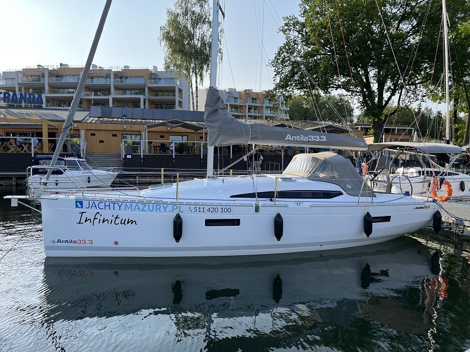

Antila 33.3„Infinitum”
- Miejsca
- 10
- Kabiny
- 3
- Zanurzenie
- 0,45 / 1,80 m
- Rok produkcji
- 2023
Długość całkowita10,79 m
Cena od800 zł / doba

Jachty żaglowe · 1 jednostka
od 800 zł / doba
Antila 33.3 to ulepszona wersją popularnej Antila 33 i jedna z największych jednostek kabinowych w tym segmencie dostępnych na Mazurach. Model wyróżnia się wydłużoną linią kadłuba, większą przestrzenią użytkową oraz dopracowaną konstrukcją względem wcześniejszych wersji.
To turystyczny jacht kabinowy zaprojektowany z myślą o wygodnym czarterze dla 8 osób, z możliwością maksymalnego wykorzystania przestrzeni przy większej załodze. Maksymalnie 10 osób.
Poniżej znajdziesz szczegółowe informacje: Antila 33.3 dane techniczne, wymiary, wnętrze, koje, ilość osób oraz orientacyjną cenę.
Najważniejsze parametry modelu:
• Pełna długość: 10,79 m
• Długość kadłuba: 9,60 m
• Pełna szerokość: 3,24 m
• Zanurzenie bez miecza / z mieczem: 0,45 m / 1,80 m
• Zanurzenie z kilem: 1,85 m / 1,60 m
• Maksymalna wysokość w kabinie: 1,95 m
• Powierzchnia żagli (fok + grot): 51,2 m²
• Balast: 1500 kg
• Wysokość masztu: 12,75 m
• Maksymalna liczba załogi: 10
• Liczba miejsc do spania: 6 + 4
Te parametry sprawiają, że jacht Antila 33.3 jest stabilny i przewidywalny przy silniejszym wietrze. Większa długość całkowita oraz solidny balast przekładają się na spokojne zachowanie jednostki.
Pod względem przestrzeni Antila 33.3 oferuje więcej miejsca niż wcześniejsze modele z tej serii. Długość 10,79 m oraz szerokość 3,24 m. W kabinie łazienkowej wydzielona została kabina prysznicowa co realnie wpływa na komfort mieszkalny.
Wysokość 1,95 m w kabinie zapewnia komfort poruszania się również wyższym osobom. To model, który daje wyraźne poczucie większej przestrzeni niż Antila 30.
Antila 33.3 wnętrze zostało zaprojektowane w nowoczesnym stylu.
W standardowym układzie znajdziemy:
• Zamykaną kabinę dziobową
• Dwie kabiny rufowe
• Przestronną mesę z dodatkowymi miejscami do spania
• Aneks kuchenny (kambuz)
• Oddzielną toaletę z WC morskim oraz kabinę prysznicową.
Antila 33.3 środek jest dobrze doświetlony i funkcjonalny.
Jedno z najczęściej zadawanych pytań brzmi: Antila 33.3 ile osób pomieści?
• Maksymalna liczba załogi: 10 osób
• Liczba miejsc do spania: 6 + 4
Realny komfort zapewnia załoga 8 osób. Przy maksymalnej obsadzie 10 osób przestrzeń jest w pełni wykorzystana, ale nadal funkcjonalna podczas wakacyjnego rejsu.
Antila 33.3 czarter to wybór dla załóg, które oczekują większej przestrzeni oraz stabilniejszej konstrukcji niż w modelach około 30 stóp.
Powierzchnia żagli 51,2 m² oraz solidny balast 1500 kg zapewniają dobre właściwości nautyczne zarówno przy umiarkowanym jak i silniejszym wietrze. Silnik stacjonarny o mocy 21 KM oraz dziobowy ster strumieniowy ułatwiają manewrowanie w portach.
To model wybierany przez osoby, które chcą połączyć komfort mieszkalny większej jednostki, ale nadal w typowo mazurskim, turystycznym charakterze.
Cena czarteru uzależniona jest od sezonu, standardu wyposażenia konkretnej jednostki oraz długości rejsu.
W sezonie wysokim stawki są wyższe niż w maju, czerwcu czy wrześniu. Pełen cennik jachtów Antila 33.3 dostępnych w ofercie znajduje się w zakładce Cennik.
Przy krószych i dłuższych wynajmach ceny ustalane są indywidualnie.
Jeśli szukasz jachtu:
• Nowoczesnego i komfortowego
• Z trzema zamykanymi kabinami
• O większej długości i przestrzeni użytkowej
• Dla 6-10 osób
• O stabilnych właściwościach nautycznych
Antila 33.3 będzie bardzo rozsądną i komfortową opcją.
To model, który łączy przestrzeń, stabilność oraz nowoczesną konstrukcję, dlatego utrzymuje dużą popularność wśród załóg czarterujących jachty na Mazurach.
Sprawdź, które jachty są wolne, albo zadzwoń do biura.